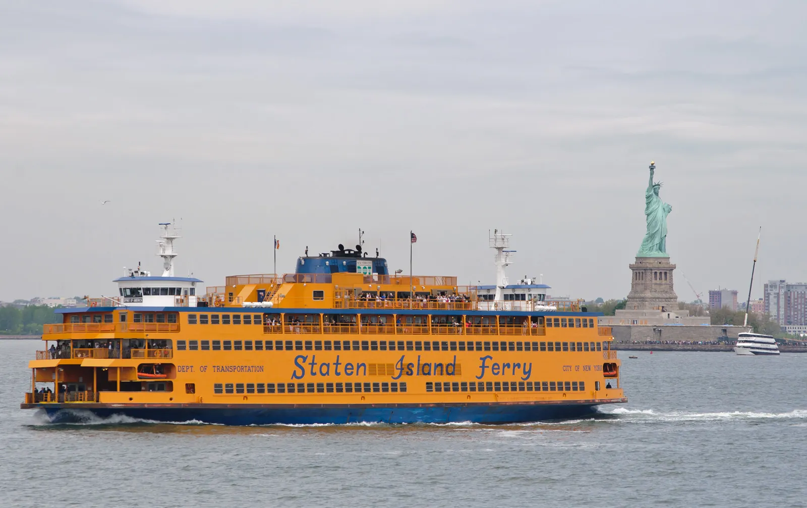

Do Central Park with the Children's Museum or the natural history museum. Leave Downtown and Brooklyn out.
New York City, New York
New York City Itinerary With Kids: Realistic 1, 2 and 3 Day Plans
Researched with AI (Miles Rowan) · sources linked and dated · How we check
Three realistic plans for kids 4 and 8: one part of town a day, with a break built in. Swap stops for age, weather and your hotel.
Family of 4 tickets for the whole trip, estimate: 2 adults, kids 4 and 8
≈ $68 to $168
- 1 day ≈ $68Central Park (free) and the Children's Museum of Manhattan
- 2 days ≈ $68No new tickets: the Staten Island Ferry is free
- 3 days ≈ $168Add the Bronx Zoo, or the Intrepid for kids 6+ (≈ $172 total)
The catch: The Children's Museum lists no Monday hours, and strollers stay at its free check. The Bronx Zoo price is its winter rate, through Mar 25, 2027.
Spending less, or older kids?
Spending less: Central Park, the Staten Island Ferry and Brooklyn Bridge Park are free, so 2 days can be $0 in tickets.
Older kids: The Children's Museum is aimed at about 6 and under (our estimate). If your older child would be bored, swap in the American Museum of Natural History, whose visit page shows no price, so check live. With two kids 13 and up, the Intrepid is ≈ $152 and the Statue of Liberty ferry ≈ $104.
Estimate from official prices read Nov 2, 2026 (Intrepid Nov 1). Children's Museum $17 online from age 1; Bronx Zoo $28.95 adult, $20.95 ages 3 to 12; Intrepid $38 adult, $28 ages 5 to 12, 4 and under free. Hotel, food, parking, fees and subway ($3 a ride per full-fare rider, read Oct 10) extra. Compare hotel prices

Coming for the holidays? Christmas in New York City with kids, free and paid
Prices checked: November 2, 2026 (Intrepid November 1). Ferry facts, Children's Museum and Intrepid hours: November 3, 2026. Other sources: July 26, 2026
These plans are our suggestions. Prices and hours come from official pages; age fit and time are our estimates.
Official prices and hours we used
As published on each venue's own pages. Prices read November 2, 2026 (Intrepid November 1); hours and ferry facts read November 3, 2026. Other venue facts on this page date from July 26, 2026. Confirm hours and prices for your exact date.
- Children's Museum of Manhattan prices: Adults and children 1 to 18: $17 online, $18 in person; under 12 months free. Children's Museum visit page (checked November 2, 2026).
- Children's Museum hours and strollers: Tuesday to Sunday, 10 a.m. to 5 p.m.; Monday is not listed. 212 West 83rd Street. Walk-up tickets are available, but reserving holds your spot. Strollers are not allowed in exhibit areas; stroller and coat check is free. Children's Museum plan your visit (checked November 3, 2026).
- Staten Island Ferry: The ride is free and takes about 25 minutes, between Whitehall Terminal in Lower Manhattan and St. George Terminal. The page does not say whether you may stay on board for the return, so plan to get off and reboard. Staten Island Ferry traveler information (checked November 3, 2026).
- Bronx Zoo: Winter season through March 25, 2027: adult 13 and up $28.95; child 3 to 12 $20.95; 2 and under free. Car parking $22. We did not record its hours, so check your day. Bronx Zoo hours and rates (checked November 2, 2026).
- Intrepid Museum prices: Adults 13 to 64 $38; children 5 to 12 $28; 4 and under free; add-ons extra. For kids 4 and 8, ≈ $104 for four; when the younger child turns 5, ≈ $132. Intrepid tickets (checked November 1, 2026).
- Intrepid Museum hours: October 1 to March 31: daily 10 a.m. to 5 p.m., last entry 4 p.m. Closed Thanksgiving and Christmas Day. Hours can change daily. Intrepid visitor information (checked November 3, 2026).
- American Museum of Natural History: Its visit page shows no prices. New York, New Jersey and Connecticut residents with ID choose what they pay for general admission. AMNH plan your visit (checked November 2, 2026).
- Statue of Liberty ferry: Adult 13 and up $26; ages 4 to 12 $17; under 4 free. Island museums cost nothing extra. Four people 13 and up ≈ $104; kids 4 and 8 ≈ $86. National Park Service fees (checked November 2, 2026).
Quick route decisions
Pick the trip length before the attractions
Keep the park and museum day apart from the ferry, The Battery or a Brooklyn view.
Use the third day for the Bronx Zoo, the Intrepid, a show or a rainy-day swap.
Day-by-day routes
Your day-by-day plans
Our suggested order. Open a plan, then check tickets, hours and your route for your dates.
One-day first look
Use this for
Short visits and first-time families who want one easy New York City day (not a Monday if you want the Children's Museum)
First
The Children's Museum of Manhattan on West 83rd Street, from 10 a.m. Older kids: the American Museum of Natural History instead. Pick two or three halls before you go in.
Then
Lunch, then Central Park or a hotel break. Keep this even if the morning runs long.
Last
A playground, a neighborhood dinner or an early trip back. Add a Midtown ticket only if you drop something else.
When to stop
Stop after one big stop and an easy finish. Downtown, Brooklyn and a second ticket are the first things to leave out.
Two-day first trip
Use this for
Weekend families who want a park and museum day, then one harbor view
Day 1: Uptown
Follow the one-day plan. Keep dinner and the evening close to your hotel.
Day 2: Downtown
Ride the free Staten Island Ferry from Whitehall Terminal, about 25 minutes each way, then walk over to The Battery. Or go to Brooklyn Bridge Park instead. Pick one.
Keep one break
Protect one free afternoon or hotel return. If Day 1 runs late, drop the Day 2 extras before you cut food or rest.
When to stop
Don't add the Statue of Liberty, a bridge walk, Brooklyn and a Broadway show to Day 2.
Three-day balanced trip
Use this for
Families who want two set days plus one big pick
Day 1: Uptown
Follow the one-day plan, with a clear way back to the hotel.
Day 2: Downtown
The ferry and The Battery, with a meal or indoor stop ready if the weather turns.
Day 3: one big pick
The Bronx Zoo works for both ages but is mostly outdoors, so pick a dry day. The Intrepid (planes, a carrier, the Space Shuttle) and the Statue of Liberty ferry (≈ $86 for your four) suit kids about 6 and up, by our estimate. Any of these fills the day.
When to stop
Keep one stop optional each day, and plan only one late evening.
Change the route
Change the plan for age, weather, budget or your hotel
| If this is your trip | Keep | Swap | Watch for | Check first |
|---|---|---|---|---|
| Younger child, nap or stroller | One short stop and the protected break | Use one playground or the Children's Museum instead of a long multi-stop day | Station elevators, entrances, queues, noise and the trip back to the hotel vary | MTA route and elevator status, meal, bathroom and hotel-return plan |
| Teen or mixed ages | One stop an older kid picks | Use the teen guide for skyline, theatre, sports, art or food | Show content, younger-sibling fit, cost and the evening trip back | Ticket, age rule, weather and whether you can split up |
| Rain, heat, cold or poor air | One indoor stop and a nearby meal | Move the ferry, park, bridge or skyline stop instead of forcing the plan | Indoor can still mean queues, walking, noise and transfers | Forecast, venue status, MTA alerts, ticket and coat or stroller check |
| Budget trip | One paid stop plus free time | Use Central Park, the Staten Island Ferry or Brooklyn Bridge Park | Transit, meals, special exhibits and extras still cost money | Operating status, weather, event closures and transit |
| Arrival, departure or hotel location | Keep the first and last parts of the trip near your hotel | Move the farthest stop to the full day with the easiest way back | Hotel entrance, luggage, station elevators, check-in time | Exact address, luggage plan, MTA service and elevators |
Stop rules
Four rules that protect the itinerary
One part of town a day
A big museum, the ferry, the park or a show can fill half a day. Don't add another big stop because it's nearby.
Schedule the break
Choose the meal, hotel return, nap or park break before the day starts. If the break disappears, drop the next activity.
Check the station and the entrance
A neighborhood pin doesn't show the working elevator, the ferry terminal or the stroller route. Check MTA and the venue near your trip.
Decide what to drop
Choose which evening can run late and what goes when your child is done. A prepaid ticket won't help a tired kid.
Next steps
Finish the activity and lodging decisions
Choose the main stop
Compare 12 current choices by age, weather, cost and pace before placing one into the day.
Give teens one real choice
Use the older-kid guide when skyline, theatre, sports, art, food or a photo payoff should shape the day.
Choose the stay area
Compare Upper West Side, Midtown, Downtown/Tribeca, Brooklyn and Long Island City by how far each day's trip back is.
Compare named hotels
Use the 12-hotel page for rough nightly totals, room setup, official facts, sampled online-review themes and maps.
Common planning questions
New York City family itinerary FAQ
How many days should a family spend in New York City?
Two full days work for a first trip: an Uptown day with Central Park and a museum, then a Downtown day with the free ferry and The Battery. A third day adds room for the Bronx Zoo, the Intrepid or a rainy-day swap.
What should families skip on a short New York City trip?
Skip crossing the city for several stops, more than one big stop in a half day, and a late ticket every evening. Keep one part of town, one main stop, a meal or break, and a clear point to stop.
How should families change the itinerary for bad weather?
Move the main stop to one indoor choice, keep the meal and hotel break close to it, and drop the ferry, park, bridge or skyline stop when conditions do not fit. Recheck venue, weather and MTA information before leaving.
Sources checked
Official sources and licensing notes
Ticket prices read November 2, 2026 (Intrepid November 1); ferry facts and Children's Museum and Intrepid hours read November 3, 2026; subway fare read October 10, 2026; other official attraction, park, theatre and transit sources checked July 26, 2026. Recheck schedules, service and elevator status, tickets, weather, access and exact routes for your dates.
- Children's Museum of Manhattan visit and prices
- Children's Museum of Manhattan plan your visit
- Bronx Zoo hours and rates
- Intrepid Museum tickets
- Intrepid Museum visitor information
- Statue of Liberty fees (National Park Service)
- Staten Island Ferry traveler information
- OMNY fares
- MTA trip and service information
- MTA accessible stations
- MTA elevator and escalator status
- American Museum of Natural History plan a visit
- AMNH accessibility
- AMNH sensory resources
- Central Park Conservancy visitor information
- NYC DOT Staten Island Ferry schedule
- The Battery visitor information
- Brooklyn Bridge Park visitor information
- Broadway League current shows and advisories
- Staten Island Ferry photo source and attribution (CC BY-SA 2.0)
- CC BY-SA 2.0 license